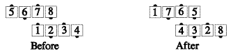
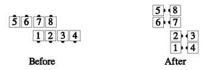

From a parallelogram (i.e., offset by one or more dancer positions, most commonly by 2): The dancers act as though they were in a 2x4 formation, but work to the spots where real dancers are.
Parallelogram Acey Deucey:

Common applications include late [sic], Split Circulate, In Roll Circulate, Walk & Dodge, Scoot Back, and Acey Deucey.
If the call is one that rotates the 2x4 formation (e.g. Counter Rotate 1/4), the formation becomes offset lines, waves, or columns (as appropriate to the call's ending formation), offset the same way the parallelogram was. For example: Parallelogram Bend the Line:

The percentage of offset is preserved, not necessarily the footprints.